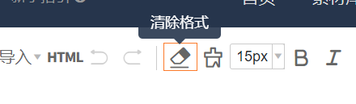
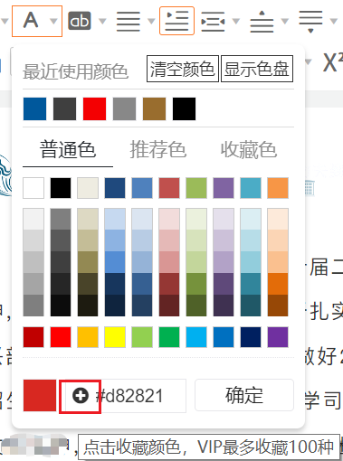
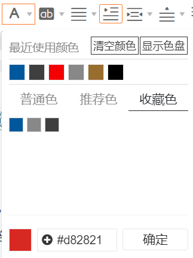

概述
本页面为第八届换届工作的交接展示，涵盖编辑工具使用、推送思路等内容。
推送示例展示
注：点击图片可直接跳转到对应推送链接

135编辑器使用说明
135编辑器是目前使用最多、效率较高的排版编辑器之一， 但由于其功能并不十分完善导致常出现很多surprise （指怎么改都改不好的bug，尤其是行间距）， 所以特此根据第六届及第七届运营管理部工作中出现的各类情况进行汇总， 同时由于135编辑器相对而言上手难度更小、功能更简洁， 本文也可以作为基于135编辑器的排版初步培训内容。 由于部门培训会讲解最基本的操作，此处仅分享一些提高效率的小技巧以及常见问题的解决方案。
基本格式的快速设置
当一段文案从其他地方粘贴过来时，有时会或多或少带有一定的格式。 避免自带格式影响排版效果的最好方式即为首先对文段进行清除格式。 清除格式一般适用于图片位置错乱、行间距设置值为2但实际偏大或偏小等格式上的问题，属于最根本的解决手段。
而颜色的设置可以提前将常用的颜色置为收藏，在“收藏色”中可以快速选用。


秀米编辑器使用说明
秀米支持图文混排与排版微调，适合更精细化的内容创作。
封面图与可画使用说明
封面图的比例及小图截取
推送思路分析
我们通常围绕招生热点、政策发布和学生关心的话题进行内容策划。